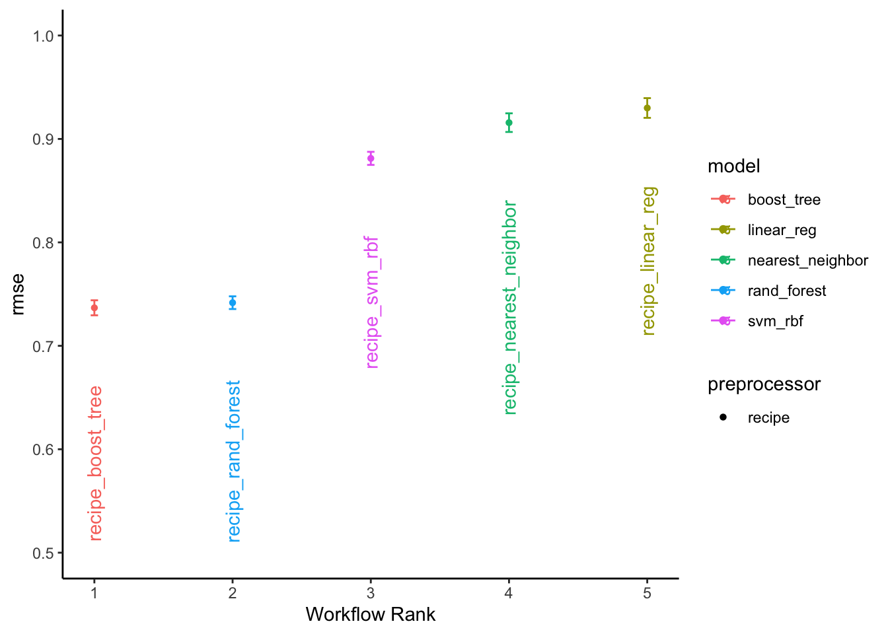
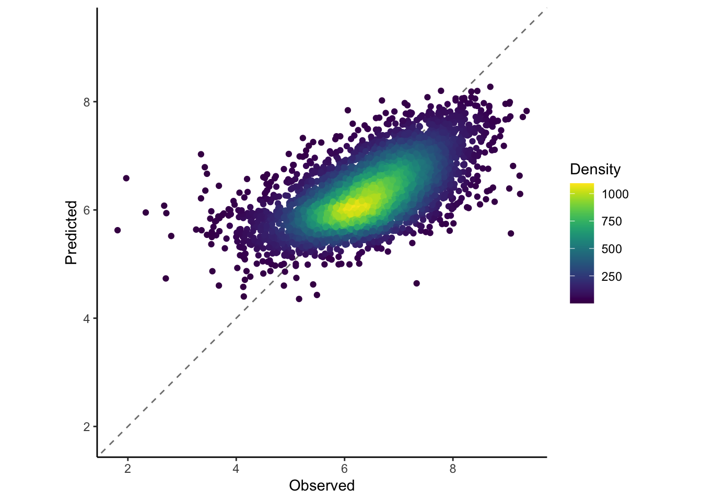
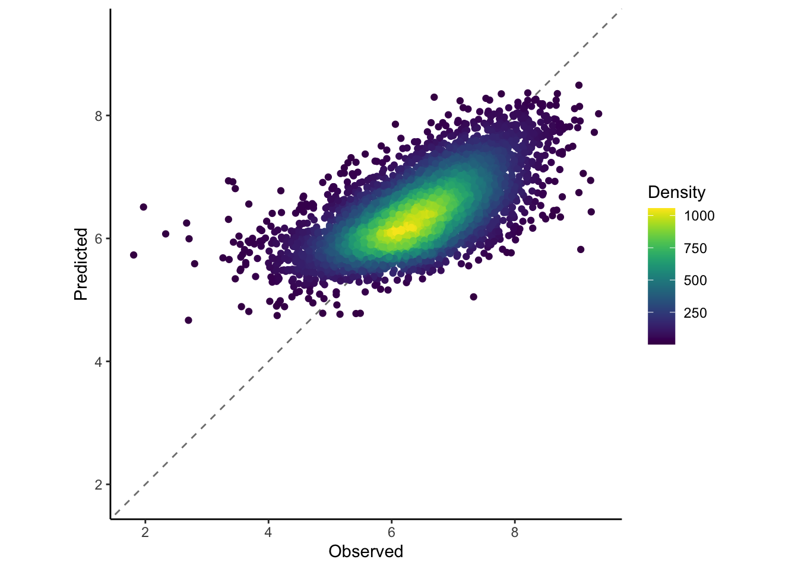

Rows: 21831 Columns: 10
── Column specification ────────────────────────────────────────────────────────
Delimiter: ","
chr (3): name, url, thumbnail
dbl (7): num, id, year, rank, average, bayes_average, users_rated
ℹ Use `spec()` to retrieve the full column specification for this data.
ℹ Specify the column types or set `show_col_types = FALSE` to quiet this message.
Rows: 21631 Columns: 23
── Column specification ────────────────────────────────────────────────────────
Delimiter: ","
chr (10): primary, description, boardgamecategory, boardgamemechanic, boardg...
dbl (13): num, id, yearpublished, minplayers, maxplayers, playingtime, minpl...
ℹ Use `spec()` to retrieve the full column specification for this data.
ℹ Specify the column types or set `show_col_types = FALSE` to quiet this message.
ratings_joined <- ratings %>%left_join(details, by ="id") %>%filter(!yearpublished%in%NA) %>%select(id,average,yearpublished,minplayers,maxplayers,minage,playingtime,minplaytime,maxplaytime)
Preliminary Data Exploration
Lets look at ratings of board games.
library(tidyverse)
── Attaching core tidyverse packages ──────────────────────── tidyverse 2.0.0 ──
✔ dplyr 1.1.4 ✔ readr 2.1.5
✔ forcats 1.0.0 ✔ stringr 1.5.1
✔ ggplot2 3.4.4 ✔ tibble 3.2.1
✔ lubridate 1.9.3 ✔ tidyr 1.3.1
✔ purrr 1.0.2
── Conflicts ────────────────────────────────────────── tidyverse_conflicts() ──
✖ dplyr::filter() masks stats::filter()
✖ dplyr::lag() masks stats::lag()
ℹ Use the conflicted package (<http://conflicted.r-lib.org/>) to force all conflicts to become errors
First we want to create a recipe that takes all columns (apart from id) to predict the average ranking. We also square root transform max players as some have huge max players.
→ A | warning: A correlation computation is required, but `estimate` is constant and has 0 standard deviation, resulting in a divide by 0 error. `NA` will be returned.
There were issues with some computations A: x1
There were issues with some computations A: x1
Warning: More than one set of outcomes were used when tuning. This should never
happen. Review how the outcome is specified in your model.
But we will be comparing lots of specs of models so lets make a workflowset and then do the same but with lots of trained models. This will take a long time, so i set the grid to be just 5, really it should be set to around 10, or you can use other methods other than grid search. We will also add (using option_add()) a control to the grid being used and the metric to be assessed (this will be necessary when we want to ensemble the models).
i Creating pre-processing data to finalize unknown parameter: mtry
i Creating pre-processing data to finalize unknown parameter: mtry
Once that finishes running we can compare between all the tuned models.
autoplot( all_res,rank_metric ="rmse", # <- how to order modelsmetric ="rmse", # <- which metric to visualizeselect_best =TRUE# <- one point per workflow) +geom_text(aes(y = mean -0.075, label = wflow_id), angle =90, hjust =1) +lims(y =c(0.5, 1)) +theme_classic()

Select Best Model
Lets select a good model, then see how well it performs on predicting the test data. All models performed fairly well but lets select the recipe_boost_tree model. The best_results object provides us the ‘best’ hyper parameter values for this model framework (the best hyper parameters for the boosted tree models looked at). This is based on a very small amount of tests here, in reality we should use many more combinations of hyper parameters to test the best ones.
Now lets combine these hyperparrameter values with the workflow, finalise the model and then fit to the initial split of our data. Then we can collect the metrics when this model was applied to the test dataset.
# A tibble: 2 × 4
.metric .estimator .estimate .config
<chr> <chr> <dbl> <chr>
1 rmse standard 0.747 Preprocessor1_Model1
2 rsq standard 0.390 Preprocessor1_Model1
We can also plot the predicted verses the true results.
boosting_test_results %>%collect_predictions() %>%ggplot(aes(x = average, y = .pred)) +geom_abline(colour ="gray50", linetype =2) +geom_pointdensity() +coord_obs_pred()+scale_color_viridis() +labs(x ="Observed", y ="Predicted",colour="Density")+theme_classic()

Ensemble All Models Together
After training all these different models and there could be a lot more, we may be losing predictive ability by only selecting the best one. It has been shown by many researchers that combining an ensemble of models will generally lead to better prediction ability. With the Stacks package in r we can easily stack or ensemble our models together.
all_stacked<-stacks() %>%add_candidates(all_res) %>%blend_predictions() %>%fit_members() stack_test_res <- test %>%bind_cols(predict(all_stacked, .))stack_test_res %>%ggplot(aes(x = average, y = .pred)) +geom_abline(colour ="gray50", linetype =2) +geom_pointdensity() +coord_obs_pred()+scale_color_viridis() +labs(x ="Observed", y ="Predicted",colour="Density")+theme_classic()

Validation Metric
Earlier, our ‘best’ model produced an rmse of: 0.747, which is very good and our ensemble model created an rmse of: 0.708, which is almost identical but just slightly better. This is what ensembling is so often used for; improving an already very good model.